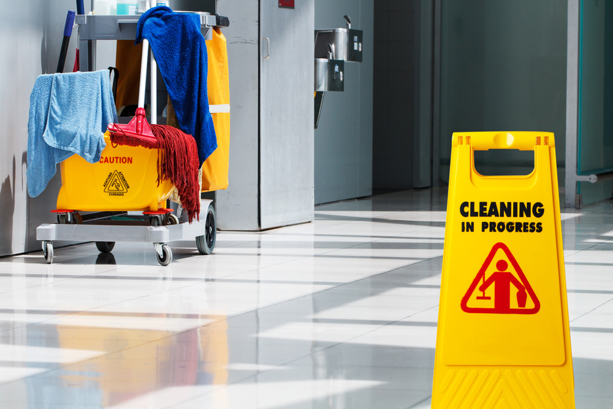

Go Back
Tips and Tricks to Keeping your Facility Sanitized
Published: Jun 21, 2023

Introduction
In today's world, maintaining a clean and sanitized office environment is more crucial than ever. A hygienic workspace not only
boosts employee morale but also ensures the health and safety of everyone who enters your office. With the ongoing concerns related
to infectious diseases, it's essential to go beyond the basics when it comes to office sanitization. In this comprehensive guide,
we will explore effective tips and tricks to keep your office space immaculate, creating a healthier and more productive work environment.
Creating a Sanitization Plan
Before diving into specific cleaning techniques, it's crucial to establish a clear sanitization plan for your office. Here are some steps to consider:
-
Assess Your Needs: Identify high-traffic areas, shared spaces, and frequently touched surfaces that require regular cleaning and sanitization.
-
Set a Schedule: Develop a cleaning schedule tailored to your office's needs. Consider daily, weekly, and monthly tasks to ensure consistent sanitization.
-
Allocate Resources: Ensure you have the necessary cleaning supplies, personal protective equipment (PPE), and sanitization products readily available.
Best Practices for Office Sanitization
Now, let's delve into the core practices for keeping your office sanitized effectively:
1. Hand Hygiene
-
Provide Hand Sanitizers: Install hand sanitizer stations in high-traffic areas, like entrances and break rooms, to encourage regular hand sanitization.
-
Promote Proper Handwashing: Educate employees on the importance of thorough handwashing with soap and water for at least 20 seconds.
2. Cleaning and Disinfecting Surfaces
-
Provide Hand Sanitizers: Install hand sanitizer stations in high-traffic areas, like entrances and break rooms, to encourage regular hand sanitization.
-
Promote Proper Handwashing: Educate employees on the importance of thorough handwashing with soap and water for at least 20 seconds.
3. Air Quality
4. Common Areas
-
Social Distancing: Rearrange furniture and workstations to promote social distancing.
-
Regular Cleaning: Assign someone to disinfect common areas like kitchens, bathrooms, and meeting rooms frequently.
5. Personal Hygiene
-
Promote Respiratory Etiquette: Encourage employees to cover their mouths and noses with tissues or elbows when coughing or sneezing.
-
Stay Home When Sick: Implement policies that encourage sick employees to stay home to prevent the spread of illness.
Employee Training
To ensure the success of your office sanitization efforts, it's essential to educate your employees:
-
Conduct training sessions on proper sanitization practices and the correct use of cleaning products and equipment.
-
Emphasize individual responsibility in maintaining a clean workspace and encourage employees to report sanitation concerns promptly.
Monitoring and Adjusting
Regularly assess the effectiveness of your sanitization efforts. Be prepared to adjust your plan as needed, especially during flu seasons or health crises.
Conclusion
In conclusion, maintaining a sanitized office is not only about appearances but also about the health and well-being of your employees.
By creating a comprehensive sanitization plan, following best practices, educating your staff, and staying vigilant, you can create a workspace that
promotes productivity and peace of mind.
Remember, office sanitization is an ongoing effort, and the tips and tricks outlined in this guide will help you maintain a cleaner and safer workplace for all.